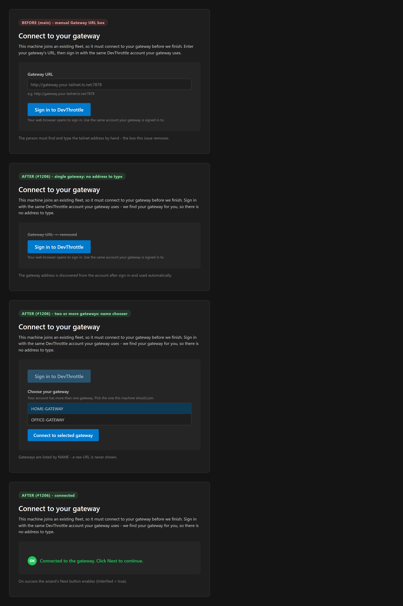

Branch: issue-1206-gateway-url-discovery |
Role: Developer Agent (CenCon) |
Base: origin/main @ 98c7b3f5
endpoint_url added to
CloudDeviceRecord (parsed from the cloud's endpoint_url field) and to
CloudDeviceRegistrationRequest; sent on POST /api/v1/devices/register and now
also on POST /api/v1/devices/heartbeat (new optional endpointUrl parameter).
Sent only when present, so a device with no address never sends the field and the cloud never clears a
hand-set value.TailnetIdentityResolver, or
LanIdentityResolver under LAN addressing mode - issue #457), keyed on the Gateway's own port
and gateway.tailnetEndpoint override, and publishes it as endpoint_url on BOTH
register and every heartbeat. Publishing on heartbeat is what lets an already-installed gateway (which
registers once, then only heartbeats) backfill its address after updating.device_type == "gateway" with a non-empty
endpoint_url, and uses the discovered address as the enroll target. One gateway connects
automatically; more than one shows a NAME-based chooser (never a raw URL); none shows a clear
"start and sign in your gateway first" message. The manual Gateway URL box is gone.| # | Criterion | How it is met / verified | Status |
|---|---|---|---|
| 1 | After register or heartbeat on this version, the gateway's cloud device record shows a non-empty
endpoint_url equal to its resolved advertised front door. |
Gateway publishes the resolver's endpoint on register and heartbeat.
GatewayDeviceRegistrationTests.EndpointUrl_PublishedOnRegisterAndHeartbeat proves both
calls carry it against the cloud-contract stub. Live roster read is the QA gate on the maintainer's
signed-in gateway. |
Mechanics proven live roster = QA gate |
| 2 | Single-gateway account: Workstation install completes with NO Gateway URL entry - only "Sign in to DevThrottle". | URL box removed from GatewayConnectStep.xaml; single gateway auto-connects
(SignInButton_Click -> one gateway -> ConnectToGatewayAsync).
SignInAndDiscoverGateways_OneGatewayWithEndpoint_... +
EnrollWithDiscoveredGateway_AfterDiscover_.... See screenshot below. |
PASS |
| 3 | Two or more gateways: name-based chooser (no URLs), enroll against the chosen one. | Chooser panel lists gateways by Name (DisplayMemberPath="Name").
SignInAndDiscoverGateways_MultipleGateways_ReturnsAllByName_ExcludesNonGateways. |
PASS |
| 4 | No gateway (or one with no address): clear "start and sign in your gateway first" error, no empty URL box. | SignInAndDiscoverGatewaysAsync returns that exact message.
SignInAndDiscoverGateways_NoGateway_... and
..._GatewayWithoutEndpoint_Excluded_Fails. |
PASS |
| 5 | An existing gateway install backfills its endpoint_url via heartbeat after updating. |
Heartbeat now sends endpoint_url every tick.
DeviceRegistryClientRegisterHeartbeatTests.HeartbeatAsync_SendsEndpointUrlWhenGiven_...
+ the Gateway publishing test. Live backfill on the maintainer's gateway is the QA gate (cloud
heartbeat accept already deployed: devthrottle_internal 31a406f). |
Mechanics proven live backfill = QA gate |
Faithful reproduction of the WPF step's dark theme (from tools/cc-director-setup/App.xaml),
showing the removed URL box (before), the single-gateway automatic path, the name-based chooser, and the
connected state.

// GatewayDeviceRegistrationService.EnsureRegisteredAsync (register)
var endpointUrl = ResolveEndpointUrl();
var request = new CloudDeviceRegistrationRequest(installId, _platform, _machineName, GatewayDeviceType, _appVersion, endpointUrl);
// GatewayDeviceHeartbeatService.HeartbeatGatewayOnceAsync (every heartbeat - backfill)
var endpointUrl = _registration.ResolveEndpointUrl();
var advanced = await _client.HeartbeatAsync(token, _registration.InstallId, _appVersion, endpointUrl, ...);
// GatewayHost - the resolver, the same policy Directors use to advertise
var resolution = endpointAddressingMode == AddressingMode.Lan
? lanResolver.ResolveEndpoint(gatewayPort, endpointOverride)
: tailnetResolver.ResolveEndpoint(gatewayPort, endpointOverride);
return resolution.IsResolved ? resolution.Endpoint : null;
// GatewayAccountEnrollRunner.SignInAndDiscoverGatewaysAsync
var devices = await registry.ListDevicesAsync(tokens.AccessToken, ct);
foreach (var device in devices)
if (string.Equals(device.DeviceType, GatewayDeviceType, StringComparison.OrdinalIgnoreCase)
&& !string.IsNullOrWhiteSpace(device.EndpointUrl))
gateways.Add(new DiscoveredGateway(device.Name, device.EndpointUrl.Trim()));
if (gateways.Count == 0)
return OperationResult<...>.Fail(
"No reachable gateway is registered on your account yet. Start and sign in your gateway first, then run this installer.");
=== Core: DeviceRegistryClient (endpoint_url on register/heartbeat + record parse) === Passed! - Failed: 0, Passed: 13, Total: 13 === Gateway: device registration + child mirror (publishes endpoint_url) === Passed! - Failed: 0, Passed: 23, Total: 23 === Engine: GatewayAccountEnrollRunner (sign-in + discover gateways) === Passed! - Failed: 0, Passed: 18, Total: 18
Full solution build: Build succeeded. 0 Warning(s), 0 Error(s).
No architecture or security drift. The change is additive: an optional endpoint_url on an
existing contract, published by the Gateway and consumed by the installer. Security rule DT-05 (never log
tokens/keys) is preserved on every path - the account token is held in memory only during discovery and is
never persisted or logged; no new cloud endpoint is introduced. No fallback programming: an unresolved
address returns null and simply omits the field (a heartbeat backfills later), and every
expected failure surfaces a clear, actionable message that BLOCKS the install rather than fabricating an
address.
endpoint_url on register and
every heartbeat against the cloud-contract stub) with the live-gateway roster read/backfill left as the QA
gate the issue itself specifies, now unblocked by the deployed cloud heartbeat change.